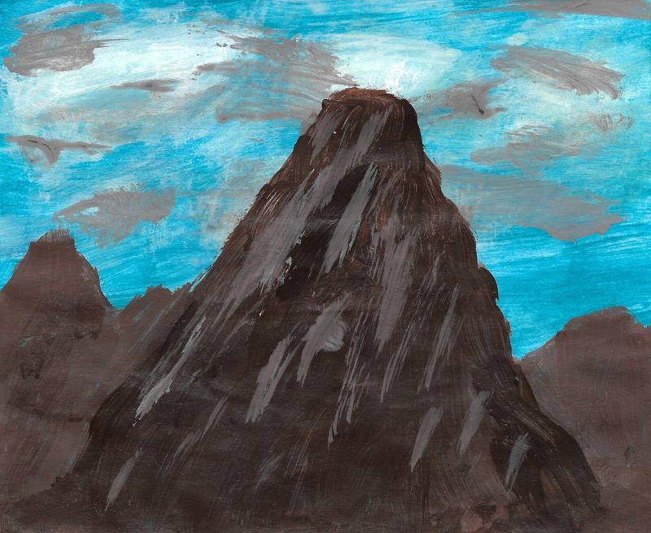

Painting
I usually paint more than I draw. I think it's because it's more sensory, so I tend to enjoy it more. For some reason though, I think my drawings are much better than my paintings. Sometimes, I would like to take some paint and just paint something. I find it to be extremely relaxing just like drawing. Here's an example of one of my paintings below.
